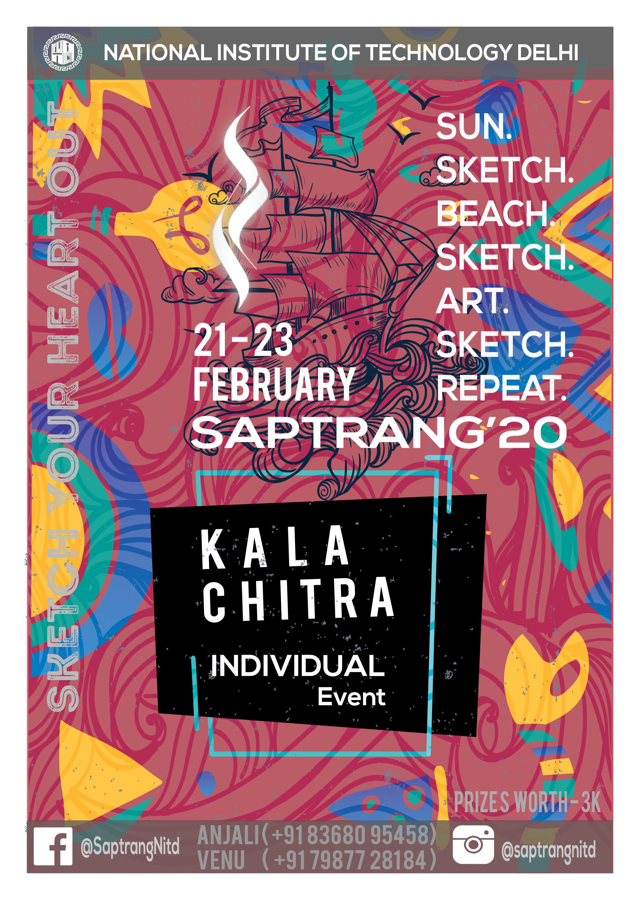

FEB
22-23
Kalachitra
Kalachitra is the most highly anticipated Art event of Saptrang’20. Sketching is the most efficient way of expressing yourself; its a medium that transcends words and encourages individuals to visualize and reinvent their creative ideas. Kalachitra aims to bring together the prevailing generation's most artistic minds and provide them with a platform to compete. The premise is simple: to represent a certain given topic in your own style and utilize different skills.